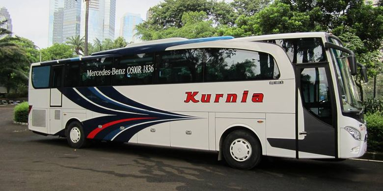
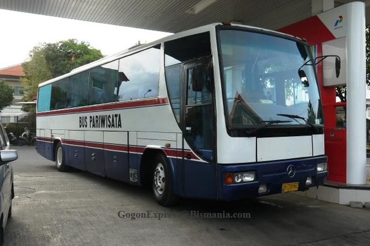

--News--
Siapkan Rp 1,8 miliar Kalau Mau Membuat Bus Suites Class
Populasi bus dengan bodi suites class di Indonesia sudah relatif banyak. Keistimewaan dari bodi suites class ini yaitu seluruh kursinya yang memakai sleeper seat, sehingga sangat nyaman untuk perjalanan jauh.

Saat ini baru karoseri Laksana yang membuat bodi bus suites class dan diberi nama Legacy SR2 Suites Class. Bus ini hanya diisi 21-23 sleeper seat saja, selain itu tiap kursi memiliki sekat, seperti naik pesawat kelas bisnis.
Lalu dengan bentuk kabin yang mewah ini, kira-kira berapa biaya untuk membuat bus suites class ini?
Baca Selanjutnya...
Export Manager karoseri Laksana, Werry Yulianto mengatakan, biaya pembuatan bodi suites class, bisa disesuaikan dengan sasis bus yang digunakan maupun spesifikasi yang ada di kabinnya.
“Misalnya paling standar dengan bodi Hino RN 285 sekitar Rp 1,8 miliar sudah termasuk AC namun tanpa Audio Video On Demand (AVOD) di kursi penumpangnya,” kata Werry kepada Kompas.com, Selasa (20/10/2020).
Kalau dilihat, harga satu sasis Hino RN 285 sekitar Rp 980 jutaan. Pembuatan bus suites class bisa lebih mahal jika menggunakan sasis premium seperti Mercedes Benz OH 1626 atau OH 1836, begitu juga sebaliknya.
Sasis Hino RN 285 sendiri sudah mumpuni untuk mengangkut bodi suites class. Hino RN 285 menggunakan mesin diesel 7.684 cc enam silinder segaris yang menghasilkan 281 TK dan torsi 892 Nm. Untuk suspensinya juga sudah memakai air suspension.
Jika harga total bus suites class dikurangi dengan harga sasis Hino RN 285, untuk bodinya saja dihargai Rp 820 jutaan. Jika dibandingkan dengan bodi bus biasa, harga untuk bodinya sekitar Rp 500 juta - Rp 600 jutaan.
“Yang bikin mahal itu mebelnya, yang membuat model cabin personal. Harga Rp 1,8 miliar itu hanya estimasi termurah. Kalau paling mahal, bisa menyentuh Rp 2 miliar,” ucap Werry.
Mengenal Sasis Bus MAN yang Jarang Digunakan oleh Bus AKAP
Produsen sasis untu bus antar kota antar provinsi (AKAP) di Indonesia datang dari berbagai negara. Misalnya seperti Mercedes Benz, Scania, Volvo yang berasal dari Eropa dan Hino, Golden Dragon dari Asia.

Namun ada satu lagi sasis bus dari Eropa yang peredarannya sangat jaran di Indonesia, yaitu sasis MAN dari Jerman. Awal masuk Indonesia pada tahun 2000-an, namun penjualannya tidak begitu baik pada waktu itu.
Kemudian MAN kembali hadir di Indonesia pada tahun 2013, membawa sasis R37 triple axle atau tronton. Keistimewaan dari sasis ini yaitu tenaganya yang sangat besar, 460 TK dan torsi 2.100 NM di 1.000-1.400 rpm.
Baca Selanjutnya...
Setahun kemudian, MAN juga merilis penerus dari sasis tronton R37, yaitu RR4 dengan tenaga yang lebih besar lagi, yaitu 480 TK dan torsi 2.300 Nm di 950-1.400 rpm. Jauh di atas sasis tronton lainnya yang hanya 410-430 TK.
Dua PO bus AKAP yang menggunakan sasis tronton ini yaitu PO Nusantara di Kudus dan PO Pelita Paradep di Medan. Uniknya lagi, kebanyakan sasis MAN R37 dan RR4 ini menggunakan bodi buatan karoseri Nusantara Gemilang.
Anggota Forum Bismania Indonesia, Dimas Raditya mengatakan, ada beberapa hal yang membuat sasis MAN R37 dan RR4 ini tidak laku di pasaran, pertama dari harga, kemudian jaringan, dan terakhir eksistensinya.
“Setahu saya harga sasis MAN tronton ini lebih mahal dibanding pesaingnya. Kemudian jaringannya yang kurang luas malah bikin kurang diminati,” ucap Dimas kepada Kompas.com, Jumat (16/10/2020).
Untuk harga sasisnya saja, belum termasuk bodinya, PO bus harus merogoh kocek Rp 2 miliar. Hal ini disebabkan teknologi sasis MAN yang diklaim canggih sehingga dibanderol dengan harga yang fantastis.
Selanjutnya yaitu soal eksistensi, merek MAN masih kurang eksis di Indonesia. Dimas mengatakan, Hal ini nantinya akan menyulitkan PO bus untuk mencari suku cadang jika bus mengalami masalah.
“Eksistensi ini maksudnya seperti populasi sasis ini di jalanan, keikutsertaan di pameran-pameran masih kurang, sehingga kurang eksis,” kata Dimas.
Selain dipakai oleh PO Nusantara dan PO Pelita Paradep sebagai bus AKAP, sasis MAN juga dipakai untuk bus tingkat pariwisata di Jakarta. Bodi yang digunakan juga sama, dari karoseri Nusantara Gemilang.
Perbandingan Dua Sasis Premium, Mercedes Benz OH1836 dan Scania K360iB
Angkutan umum seperti bus saat ini di Indonesia bukan lagi sekadar untuk mengantar orang. Kualitas jalan yang semakin membaik, membuat beberapa sasis premium mulai meramaikan jalanan di Indonesia.

Saat ini, ada dua sasis premium dual axle yang saling bersaing. Sasis premium di sini maksudnya yaitu menggunakan merek eropa, memiliki tenaga di atas 300 TK dan sudah menggunakan suspensi udara yang bisa diatur ketinggiannya.
Dua sasis premium yang saling bersaing ini yaitu Mercedes Benz OH 1836 dan Scania K360iB. Kompas.com akan membandingkan kedua sasis ini secara spesifikasinya, mulai dari mesin sampai model transmisi yang digunakan.
Baca Selanjutnya...
Mercedes Benz OH 1836 menggunakan mesin diesel 12.000 cc enam silinder segaris dengan turbo dan intercooler. Mesin ini menghasilkan tenaga 360 TK di 2.000 rpm dan torsi 1.600 Nm di 1.100 rpm.
Sedangkan Scania K360iB memiliki mesin yang sedikit lebih besar, 12.700 cc enam silinder segaris yang juga dilengkapi turbo dan intercooler. Mesin Scania K360iB menghasilkan 360 TK di 1.900 rpm dan torsi yang lebih besar yaitu 1.750 Nm di 1.000-1.350 rpm.
Untuk transmisinya, sasis Mercedes Benz OH 1836 sampai saat ini masih mengandalkan transmisi manual enam percepatan. Sedangkan Scania menggunakan transmisi Opticruise atau Automated Manual Transmission (AMT) delapan percepatan.
Mengenal Istilah Solar Jatah dan Cor pada Bus AKAP
PBus antar kota antar provinsi (AKAP) biasanya memiliki trayek dengan jarak tempuh yang relatif jauh. Oleh karena itu, di tengah perjalanan pasti ada kalanya bus mengisi bahan bakar.

Dalam istilah bus, ada yang dinamakan dengan solar jatah dan solar cor. Kedua istilah ini merupakan bagaimana cara perusahaan memberikan ongkos untuk bahan bakar bus saat beroperasi.
Pemilik Perusahaan Otobus (PO) Sumber Alam Anthony Steven Hambali mengatakan, solar jatah biasanya sudah dijatah berapa ongkos untuk isi bahan bakar saat bus beroperasi.
Baca Selanjutnya...
“ Solar jatah artinya itu borongan. Kalau sopirnya bisa irit, dia dapat jatah solarnya. Begitu juga sebaliknya, jika boros melebih jatah, sopir harus tombok,” ucap Anthony kepada Kompas.com, Minggu (18/10/2020).
Sedangkan solar cor, artinya berapapun habisnya solar yang digunakan saat mengisi bahan bakar, nanti akan diganti oleh perusahaan. Perbedaan bagaimana pemberian ongkos bahan bakar ini juga jadi berpengaruh pada operasional bus tersebut.
“Biasanya bus yang lewat jalur Pantura yang memakai sistem solar cor. Memang bisa lebih cepat karena sopirnya ngebut,” kata Anthony.
Selain itu, kalau pakai solar cor juga kadang ketika bus parkir, mesin tetap dinyalakan agar kru merasa adem di kabinnya. Berbeda dengan solar jatah, daripada tombok, sopir jadi lebih memerhatikan cara mengemudinya agar bisa hemat.
Jadi pengemudi lebih konstan kecepatannya dan tidak ugal-ugalan di jalan. Karena akselerasi dan deselerasi yang spontan bisa membuat bahan bakar lebih cepat habis, sehingga sopir tidak dapat uang tambahan.